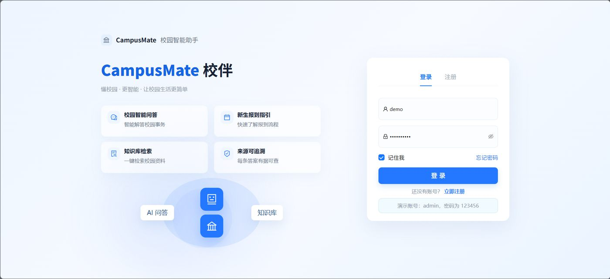

CampusMate 校伴 新生办事台
面向高校新生，将模糊的办事需求转化为有据可查、可确认执行的 AI 办事清单。
关键结果：Golden Set Top-3 Hit：98.18% · Unseen Holdout：52.5% → 75%Profile Summary
具备 AI 产品从问题洞察、方案设计到原型开发与验证的完整项目实践，关注大模型能力在真实用户场景中的产品化落地。 能够结合 Prompt Engineering、RAG 与 Agent 工作流完成 AI 产品方案设计，并借助 AI 编程工具独立推进 MVP 实现；重视用户反馈、效果评估与持续迭代。 到岗时间：2026 年 6 月｜可实习 4 个月以上
能力LLM 基础理解 · Prompt Engineering · RAG 应用设计 · Agent 工作流设计
工具LangChain · Codex · Claude Code
能力用户研究 · 需求分析 · 产品方案设计 · MVP 定义 · 原型设计
工具Figma · Pixso · 墨刀 · XMind
能力数据可视化 · 用户访谈 · 可用性测试 · 用户反馈分析
工具Excel · ECharts · Neo4j
Projects

面向高校新生，将模糊的办事需求转化为有据可查、可确认执行的 AI 办事清单。
关键结果：Golden Set Top-3 Hit：98.18% · Unseen Holdout：52.5% → 75%面向能写代码但看不懂系统如何运行的学习者，将真实项目运行转化为可追溯、可验证的全栈链路学习闭环。
关键结果：设计 5 阶段递进的 44 门课程体系，并提出四层学习效果评测方案。面向商务出差人群，将一句话需求转化为申请、行程、报销的完整执行闭环。
关键结果：独立评测集任务成功率 80%，三遍复跑稳定性通过率 75%。将诗词意境解析组织为可追溯、可干预的生成流程，帮助用户理解并控制 AI 图像生成。
关键结果：完成从诗词理解、视觉生成到结果优化的 AI 创作闭环系统，并发表论文 PoemVisWhy I Fit AI PM
关注用户在具体场景中的真实需求，先判断问题是否适合用 AI 解决，再将模型能力转化为清晰、可操作的产品流程，而不是为了使用 AI 而设计功能。
了解大模型在幻觉、稳定性、上下文理解和效果评估等方面的局限，能够在产品设计中考虑结果校验、异常兜底和用户反馈机制。
能够围绕用户问题完成需求梳理、产品方案、原型设计和 MVP 构建，并借助 AI 编程工具将产品想法快速转化为可体验、可验证的产品。
关注产品是否真正解决用户问题，通过用户访谈、可用性测试、反馈分析和数据观察发现问题，并据此优化产品流程与功能设计。
持续关注大模型、RAG、Agent 等技术及 AI 产品案例，并主动将新知识应用到个人项目中，在实践和复盘中不断完善自己的产品判断力。
Awards
本科生奖学金
本科生奖学金
本科生奖学金
研究生奖学金
Journal Extension Recommendation: Visual Informatics / JOV
Contact
联系方式：邮箱、电话/微信，期待进一步沟通